In this practice, you will see how chunking impacts AI's ability to retrieve the most relevant and accurate responses.
All the code discussed in this section is available in this Colab file:
# STEP 11. The Experiments cells below STEP 11 are for the Challenge. Each step's cell has a heading near its top, such as # STEP 0.The notebook makes its own 3 practice files about AI, in a folder called sample_docs, so there's nothing to upload.
Before we begin, we need to install all necessary packages. Press Run on the cell with the heading # STEP 0:
# ============================================# STEP 0: Install Required Libraries# ============================================## WHAT WE'RE DOING: Installing all the libraries we need for embeddings, chunking, and search.# WHY THIS MATTERS: Each library handles a different piece of our AI search system.# WHAT YOU'LL SEE: Download progress bars. This may take a few minutes — be patient!## TROUBLESHOOTING: If you see errors, try running this cell again.# Some packages may already be installed, which is fine.# ============================================!pip install -q llama-index==0.14.25!pip install -q llama-index-embeddings-huggingface==0.8.0!pip install -q llama-index-llms-google-genai==0.11.3!pip install -q llama-index-embeddings-openai==0.6.0!pip install -q llama-index-vector-stores-chroma==0.6.0!pip install -q sentence-transformers!pip install -q chromadb!pip install -q scikit-learn!pip install -q nest_asyncioWhat this code does:
!pip install, -q and exact versions such as ==0.14.25 from the chatbot notebook.What you'll see in Colab:
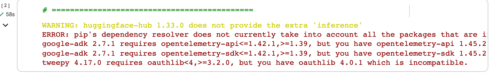
(opens the picture full size in a new tab)When the cell is done, a green tick appears next to it. This may take a few minutes. In the run shown here, the cell printed one yellow line, WARNING: huggingface-hub 1.33.0 does not provide the extra 'inference'. It's only a warning, so it's safe to ignore. The red lines below it named google-adk and tweepy, both tools Colab preinstalls that this notebook doesn't use.
Seeing red "ERROR: pip's dependency resolver…" lines? If they mention google-adk, opentelemetry or jedi, you can ignore them. Those are tools Colab preinstalls that this notebook doesn't use. Keep going. If a later cell fails with an ImportError, choose Runtime → Restart session, then run all cells again.
Now let's set up our environment. Press Run on the cell with the heading # STEP 1a:
# ============================================# STEP 1a: Import Python Libraries# ============================================## WHAT WE'RE DOING: Loading the Python tools we'll use throughout this notebook.# WHY THIS MATTERS: Each import gives us access to specific functionality.# WHAT YOU'LL SEE: No output — imports are silent unless there's an error.# ============================================import osimport timeimport pandas as pdimport matplotlib.pyplot as pltfrom IPython.display import display, Markdownimport nest_asyncionest_asyncio.apply()What this code does:
pandas (as pd) makes tables, and matplotlib (as plt) draws charts. time measures how long something takes.display and Markdown show Gemini's answers as formatted text in STEP 11.nest_asyncio.apply() from the chatbot notebook: it lets Gemini calls run inside Colab.What you'll see in Colab:
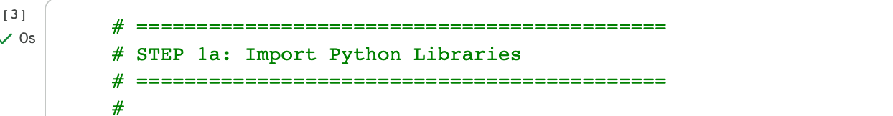
(opens the picture full size in a new tab)No output, just a green tick: the imports worked.
You saved your key in Colab Secrets in Step 1.
Set up your Gemini API key. Use Colab Secrets, the same way as in the Chatbot practice: save your key as GEMINI_API_KEY with Notebook access on, then run the cell with the heading # STEP 1:
# ============================================# STEP 1: Set Up Your API Key# ============================================## WHAT WE'RE DOING:# Setting our Google API key so we can use Gemini later for AI-powered queries.## WHY THIS MATTERS:# The API key is like a password that lets our code talk to Google's AI.## WHAT YOU'LL SEE:# No output — the key is saved silently.## TROUBLESHOOTING:# - Get your free API key at: https://aistudio.google.com/app/apikey# - Make sure there are no extra spaces around your key# ============================================import osfrom google.colab import userdata# Reads your key from Colab Secrets (the key icon in the left sidebar).# Never paste your key into a code cell.os.environ["GOOGLE_API_KEY"] = userdata.get('GEMINI_API_KEY')What this code does:
userdata.get('GEMINI_API_KEY') reads your key from Colab Secrets.os.environ["GOOGLE_API_KEY"] = ... saves it where the Gemini library looks for a key.If Notebook access is off for this copy, Colab first asks whether your notebook may read the secret GEMINI_API_KEY:
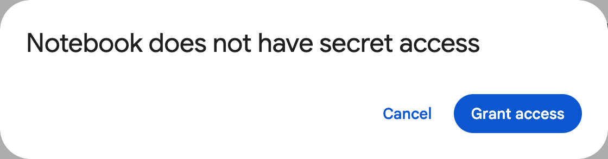
(opens the picture full size in a new tab)Click Grant access. (If you click Cancel, the cell stops with NotebookAccessError.)
What you'll see in Colab:
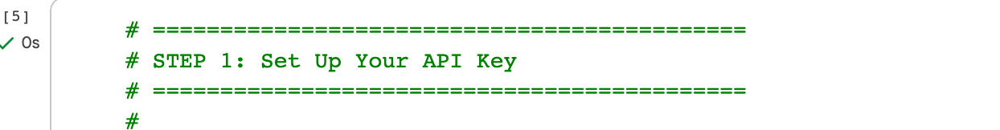
(opens the picture full size in a new tab)No output, just a green tick. The key is saved silently.
os.environ["GOOGLE_API_KEY"] now holds: your key, ready for Gemini in STEP 11.
We'll create a small sample of documents to work with. First, let's create a directory and some sample files. Press Run on the cell that starts with # Create a folder to store our sample documents:
# Create a folder to store our sample documents!mkdir -p sample_docsWhat this code does:
!mkdir -p sample_docs makes a folder called sample_docs. The ! sends the line to Colab's command line, as with !pip.Then press Run on the cell with the heading # STEP 2. Here is the top of it. The cell writes two more files the same way:
# ============================================# STEP 2: Create Sample Documents# ============================================## WHAT WE'RE DOING: Creating 3 sample text files about AI topics.# These will be the "documents" our AI will search through.# WHY THIS MATTERS: In the real world, these would be pharmaceutical documents,# research papers, or quality reports. We use simple AI text for practice.# WHAT YOU'LL SEE: No output — the files are created silently in the sample_docs folder.# ============================================# Let's create some example documentswith open("sample_docs/ai_history.txt", "w") as f: f.write("""Artificial Intelligence (AI) has a rich history dating back to the 1950s.The term was first coined by John McCarthy in 1956 at the Dartmouth Conference.Early AI research focused on symbolic methods and rule-based systems.In the 1980s, expert systems became popular but faced limitations.The 1990s and early 2000s saw a shift towards machine learning approaches.The deep learning revolution began around 2012 with breakthrough results in computer vision.Today, large language models like GPT, LLaMA, and Gemini represent cutting-edge AI capabilities.These models are trained on vast amounts of text data and can generate human-like responses.""")What this code does:
with open(..., "w") as f: opens a new text file for writing, and f.write(...) puts the text inside. The 3 files are ai_history.txt, neural_networks.txt and embeddings.txt.Both cells show a green tick and no output. To see the files, click the folder icon on the left of Colab and open sample_docs.
What you'll see in Colab:
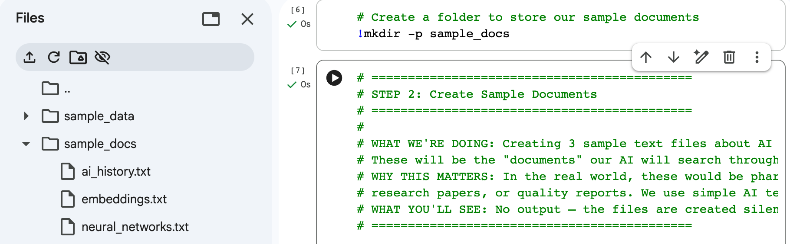
(opens the picture full size in a new tab)Start Without Chunking: Let's first load a document without chunking and see what happens. Press Run on the cell with the heading # STEP 3:
# ============================================# STEP 3: Load Documents# ============================================## WHAT WE'RE DOING: Loading all our sample documents using LlamaIndex's SimpleDirectoryReader.# WHY THIS MATTERS: This is the first step in any RAG pipeline — getting your documents into the system.# WHAT YOU'LL SEE: A count of how many documents were loaded, plus a preview of each one.# ============================================from llama_index.core import SimpleDirectoryReader# Load documentsdocuments = SimpleDirectoryReader("sample_docs").load_data()print(f"Loaded {len(documents)} documents.")# Display document contentsfor i, doc in enumerate(documents): print(f"\n--- Document {i+1}: {doc.metadata['file_name']} ---") print(doc.text[:200] + "...") # Show first 200 charsWhat this code does:
SimpleDirectoryReader("sample_docs") reads every file in the folder, and .load_data() turns each one into a document (one loaded file).documents now holds: one document for each file.
What you'll see in Colab:
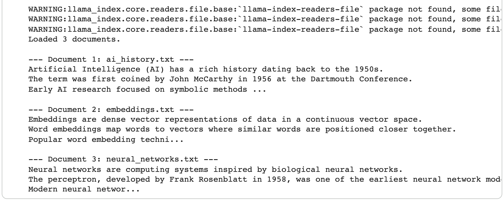
(opens the picture full size in a new tab)STEP 3 loaded 3 documents, one for each file. Nothing is split yet: each file is still one whole piece of text. Next, let's see how chunking splits them.
The llama-index-readers-file package not found warning is safe to ignore. That package is only for other file types, such as PDFs.
Now that we have seen the problem, let's explore different ways to break our document into manageable chunks.
Fixed-Length Chunking: Splitting text into equal-sized chunks (your notebook uses 100 tokens per chunk). Works best for structured text, but may cut sentences awkwardly. Press Run on the cell with the heading # STEP 4:
# ============================================# STEP 4: Fixed-Length Chunking# ============================================## WHAT WE'RE DOING: Breaking our documents into fixed-size chunks (100 tokens each, no overlap).# WHY THIS MATTERS: AI can't process huge documents at once — chunking breaks them into manageable pieces.# WHAT YOU'LL SEE: The total number of chunks created, plus a sample chunk.# ============================================from llama_index.core.node_parser import SentenceSplitter# Fixed-length chunking with no overlapsplitter_fixed = SentenceSplitter(chunk_size=100, chunk_overlap=0)chunks_fixed = splitter_fixed.get_nodes_from_documents(documents)print(f"Total Fixed-Length Chunks Created: {len(chunks_fixed)}")# Display a sample chunkprint(f"\nSample fixed-length chunk:")print(chunks_fixed[0].text)What this code does:
SentenceSplitter(chunk_size=100, chunk_overlap=0) cuts text into pieces of up to 100 tokens (a token is a word or part of a word). 0 means no overlap.get_nodes_from_documents cuts all 3 documents into nodes, LlamaIndex's name for chunks. chunks_fixed holds them.What you'll see in Colab:
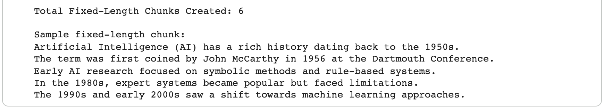
(opens the picture full size in a new tab)STEP 4 made 6 chunks from the 3 files. The sample chunk is the first 5 lines of ai_history.txt, and it ends on a full sentence: SentenceSplitter tries to break between sentences, so on these files no sentence was cut.
Overlapping Chunking: Overlapping chunks carry a portion of the previous chunk to keep context intact. Prevents AI from losing meaning when retrieving information. Press Run on the cell with the heading # STEP 5:
# ============================================# STEP 5: Overlapping Chunks# ============================================## WHAT WE'RE DOING: Creating chunks with 20-token overlap between consecutive chunks.# WHY THIS MATTERS: Overlap prevents important context from being lost at chunk boundaries.# WHAT YOU'LL SEE: Chunk count and an example showing how two chunks share overlapping text.# ============================================# Chunking with overlapsplitter_overlap = SentenceSplitter(chunk_size=100, chunk_overlap=20)chunks_overlap = splitter_overlap.get_nodes_from_documents(documents)print(f"Total Overlapping Chunks Created: {len(chunks_overlap)}")# Display a sample chunk with its neighbor to see overlapprint(f"\nOverlap Example:")print(f"Chunk 1: {chunks_overlap[0].text}")print(f"Chunk 2: {chunks_overlap[1].text}")What this code does:
chunk_overlap=20 makes each chunk repeat up to 20 tokens from the end of the chunk before it.print lines show chunk 1 and chunk 2, so you can spot the repeated text.chunks_overlap now holds: the overlapping chunks.
What you'll see in Colab:
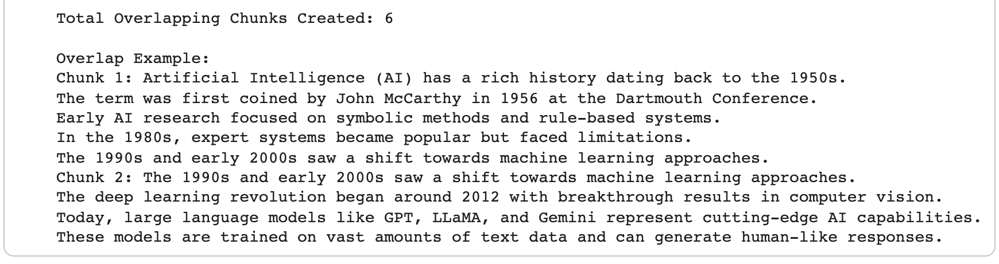
(opens the picture full size in a new tab)Chunk 2 starts with the last sentence of chunk 1, "The 1990s and early 2000s saw a shift towards machine learning approaches." That repeated sentence is the overlap.
But there is a trade-off: slightly more storage space is used due to overlapping text. STEP 7 shows it as longer chunks.
Semantic Chunking (Advanced): Uses AI embeddings to find natural topic shifts and split accordingly. Best when documents contain multiple unrelated sections. Press Run on the cell with the heading # STEP 6:
# ============================================# STEP 6: Semantic Chunking# ============================================## WHAT WE'RE DOING: Using AI embeddings to find natural topic breaks and split there.# WHY THIS MATTERS: Semantic chunking preserves meaning better than fixed-size splitting.# WHAT YOU'LL SEE: Chunk count and a sample — notice how it splits at topic boundaries.# ============================================from llama_index.core.node_parser import SemanticSplitterNodeParserfrom llama_index.embeddings.huggingface import HuggingFaceEmbeddingWhat this code does:
SemanticSplitterNodeParser is the splitter that follows meaning, and HuggingFaceEmbedding loads an embedding model from Hugging Face, a website that shares free AI models.Here's the rest of the same cell:
# Initialize embedding model for semantic splittingembed_model = HuggingFaceEmbedding(model_name="sentence-transformers/all-MiniLM-L6-v2")# Create semantic chunkersemantic_splitter = SemanticSplitterNodeParser(embed_model=embed_model)chunks_semantic = semantic_splitter.get_nodes_from_documents(documents)print(f"Total Semantic Chunks Created: {len(chunks_semantic)}")# Display a sample semantic chunkprint(f"\nSample semantic chunk:")print(chunks_semantic[0].text)What this code does:
all-MiniLM-L6-v2 is MiniLM, the embedding model you already know from Step 1.SemanticSplitterNodeParser embeds each sentence, compares neighbouring sentences and splits where the meaning changes.chunks_semantic now holds: the semantic chunks.
What you'll see in Colab:
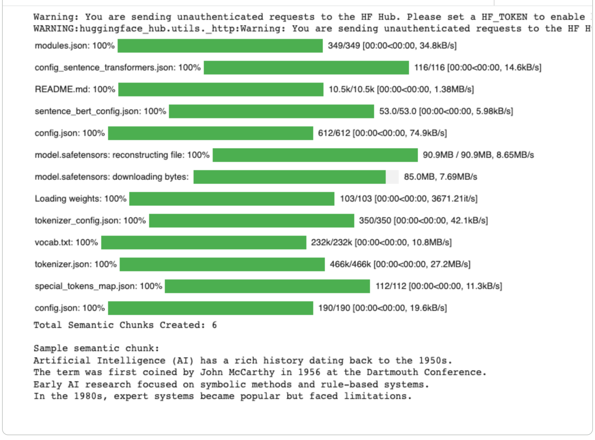
(opens the picture full size in a new tab)The semantic sample chunk stops after the 1980s line, one line earlier than the fixed chunk in STEP 4. But there is a trade-off: it first had to download MiniLM and embed every sentence, which takes extra processing time.
The "unauthenticated requests to the HF Hub" warning and the download bars are safe to ignore. The HF Hub is Hugging Face's website, where the notebook downloads MiniLM the first time.
Let's compare our chunking strategies. Press Run on the cell with the heading # STEP 7:
# ============================================# STEP 7: Compare Chunking Strategies# ============================================## WHAT WE'RE DOING: Comparing all three chunking strategies side by side.# WHY THIS MATTERS: Seeing the differences helps you choose the right strategy for your documents.# WHAT YOU'LL SEE: A table and two bar charts comparing chunk counts and average lengths.# ============================================chunking_comparison = pd.DataFrame({ 'Strategy': ['Fixed-Length', 'Overlapping', 'Semantic'], 'Number of Chunks': [len(chunks_fixed), len(chunks_overlap), len(chunks_semantic)], 'Average Chunk Length': [ sum(len(chunk.text) for chunk in chunks_fixed) / len(chunks_fixed), sum(len(chunk.text) for chunk in chunks_overlap) / len(chunks_overlap), sum(len(chunk.text) for chunk in chunks_semantic) / len(chunks_semantic) ]})display(chunking_comparison)What this code does:
pd.DataFrame builds a table with each strategy's number of chunks and average chunk length (in characters). display shows it.Here's the rest of the same cell:
# Visualize the comparisonplt.figure(figsize=(12, 5))plt.subplot(1, 2, 1)plt.bar(chunking_comparison['Strategy'], chunking_comparison['Number of Chunks'])plt.title('Number of Chunks by Strategy')plt.ylabel('Count')plt.subplot(1, 2, 2)plt.bar(chunking_comparison['Strategy'], chunking_comparison['Average Chunk Length'])plt.title('Average Chunk Length by Strategy')plt.ylabel('Characters')plt.tight_layout()plt.show()What this code does:
plt.subplot puts two charts side by side, and plt.bar draws each one from the table.What you'll see in Colab:
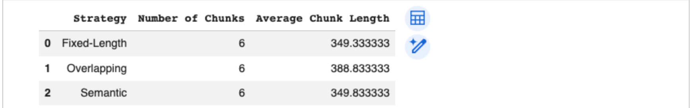
(opens the picture full size in a new tab)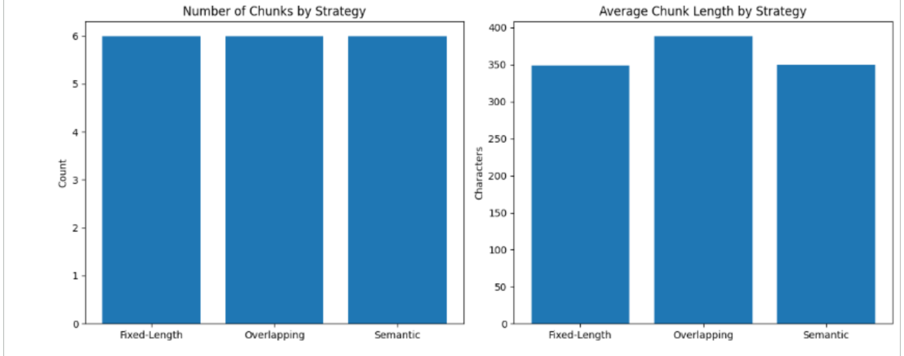
(opens the picture full size in a new tab)On these 3 short practice files, all three strategies made 6 chunks. The overlapping chunks are longer on average (about 389 characters against about 349), because each one repeats a sentence from the chunk before.
In the Task, you'll choose a chunking strategy for the supplier file and say why you chose it.
Embeddings convert text into numerical vectors. Let's explore different embedding models. Press Run on the cell with the heading # STEP 8:
# ============================================# STEP 8: Test HuggingFace Embedding Models# ============================================## WHAT WE'RE DOING: Testing two different embedding models to see how they convert text to numbers.# WHY THIS MATTERS: Different models produce different quality embeddings — bigger isn't always better.# WHAT YOU'LL SEE: A table showing each model's dimensions (how many numbers it uses) and speed.# ============================================from llama_index.embeddings.huggingface import HuggingFaceEmbedding# Initialize a list to store resultsembedding_results = []# Test different HuggingFace embedding modelshf_models = [ "sentence-transformers/all-MiniLM-L6-v2", # Small, fast model (384 dimensions) "sentence-transformers/all-mpnet-base-v2", # More powerful (768 dimensions)]What this code does:
hf_models lists two models: MiniLM and mpnet (all-mpnet-base-v2).Here's the rest of the same cell:
for model_name in hf_models: start_time = time.time() embed_model = HuggingFaceEmbedding(model_name=model_name) # Generate an embedding for a test sentence test_text = "Embeddings are numerical representations of text in vector space." embedding = embed_model.get_text_embedding(test_text) end_time = time.time() embedding_results.append({ 'Model': model_name, 'Dimensions': len(embedding), 'Generation Time (s)': end_time - start_time })# Display resultsembedding_df = pd.DataFrame(embedding_results)display(embedding_df)What this code does:
time.time().len(embedding) counts the dimensions: how many numbers each embedding has.What you'll see in Colab:
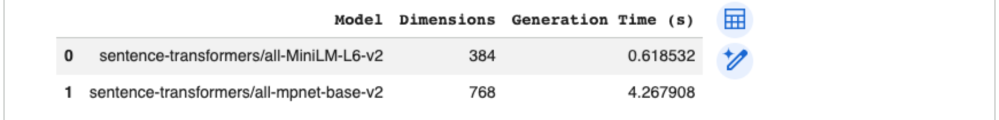
(opens the picture full size in a new tab)In the run shown here, MiniLM made 384 numbers in under a second, and mpnet made 768 in about 4 seconds. mpnet uses twice as many numbers, and its first run also downloads a bigger model, so it took longer. Your times will be a little different.
You can skip the cell under 3.2 OpenAI Embeddings (Optional). Optional Reading explains it.
Let's visualize how different texts are related in embedding space. Press Run on the cell with the heading # STEP 9:
# ============================================# STEP 9: Visualize Embedding Similarity# ============================================## WHAT WE'RE DOING: Creating embeddings for 6 sentences and measuring how similar they are.# WHY THIS MATTERS: This shows how AI "understands" meaning — similar ideas have similar numbers.# WHAT YOU'LL SEE: A colored heatmap where brighter colors = more similar sentences.# ============================================import numpy as npfrom sklearn.metrics.pairwise import cosine_similarity# Define some test sentencestest_sentences = [ "Neural networks are a powerful machine learning technique.", "Deep learning models have many layers of neurons.", "Embeddings represent words or sentences as vectors.", "Vector representations help computers understand semantics.", "The history of AI begins in the 1950s.", "Artificial intelligence research has evolved over decades."]What this code does:
test_sentences holds 6 sentences: two about neural networks, two about embeddings and two about AI history.Here's the rest of the same cell:
# Create embeddings for each sentenceembed_model = HuggingFaceEmbedding(model_name="sentence-transformers/all-MiniLM-L6-v2")embeddings = [embed_model.get_text_embedding(sent) for sent in test_sentences]# Calculate similarity matrixsimilarity_matrix = cosine_similarity(embeddings)# Visualize the similarity matrixplt.figure(figsize=(10, 8))plt.imshow(similarity_matrix, cmap='viridis')plt.colorbar(label='Cosine Similarity')plt.xticks(np.arange(len(test_sentences)), [f"Sent {i+1}" for i in range(len(test_sentences))], rotation=45)plt.yticks(np.arange(len(test_sentences)), [f"Sent {i+1}" for i in range(len(test_sentences))])plt.title('Semantic Similarity Between Sentences')plt.tight_layout()plt.show()# Print the sentences for referencefor i, sent in enumerate(test_sentences): print(f"Sentence {i+1}: {sent}")What this code does:
cosine_similarity scores how close two embeddings are: 1 means the same meaning, and lower means less alike.plt.imshow draws a heatmap: a grid where each square's colour shows the score for two sentences.What you'll see in Colab:
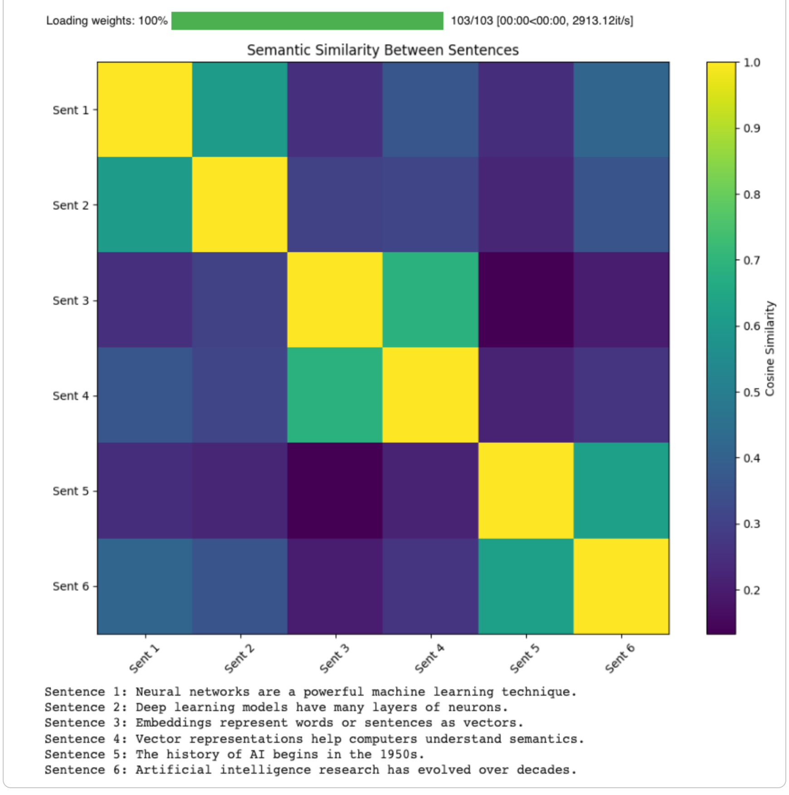
(opens the picture full size in a new tab)The yellow line from top left to bottom right is each sentence compared with itself, a score of 1. Off that line, the brightest squares pair sentences on the same topic: 3 and 4 (embeddings and vectors), 1 and 2 (neural networks), and 5 and 6 (AI history).
Now, let's combine what we've learned to build a vector database. You already know vector databases from Step 1. Press Run on the cell with the heading # STEP 10:
# ============================================# STEP 10: Build a Vector Store# ============================================## WHAT WE'RE DOING: Building a vector database that stores our document embeddings for fast search.# WHY THIS MATTERS: Vector databases are the "brain" of any RAG system — they enable semantic search.# WHAT YOU'LL SEE: "Vector store created successfully!" — your search engine is ready!# ============================================from llama_index.core import VectorStoreIndex, StorageContextfrom llama_index.vector_stores.chroma import ChromaVectorStoreimport chromadb# Initialize a Chroma clientchroma_client = chromadb.Client()chroma_collection = chroma_client.get_or_create_collection("semantic_search_demo")What this code does:
chromadb.Client() starts Chroma, a free vector database that runs inside your Colab session, and makes a collection (a named box for embeddings) in it.Here's the rest of the same cell:
# Create vector storevector_store = ChromaVectorStore(chroma_collection=chroma_collection)storage_context = StorageContext.from_defaults(vector_store=vector_store)# Let's use overlapping chunks for our indexembed_model = HuggingFaceEmbedding(model_name="sentence-transformers/all-MiniLM-L6-v2")# Create indexindex = VectorStoreIndex.from_documents( documents, storage_context=storage_context, embed_model=embed_model)print("Vector store created successfully!")What this code does:
ChromaVectorStore and StorageContext tell LlamaIndex to keep its embeddings in that Chroma box.VectorStoreIndex.from_documents(documents, ...) embeds the documents with MiniLM and stores the embeddings.index now holds: your searchable store, ready for STEP 11.
What you'll see in Colab:
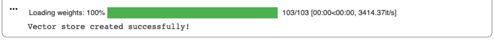
(opens the picture full size in a new tab)"Vector store created successfully!" means your search engine is ready.
The comment in this cell says it uses overlapping chunks, but the code builds the index from documents, the 3 whole files. LlamaIndex splits them with its own default size of 1,024 tokens, and each file is shorter than that, so no file is split. That's why the chunks you made in STEP 4 to STEP 6 aren't used by this search, and chunking doesn't change it on these 3 short files. The difference shows on long files with many chunks. If you code in Python, the Challenge below these slides has you embed the overlapping chunks yourself.
STEP 10 already built the store, and STEP 11 tests it.
Now that you've seen chunks and embeddings, let's store the embeddings and test document retrieval. We'll use Gemini to generate answers from the retrieved chunks.
Press Run on the cell with the heading # STEP 11. Here is the top of it:
# ============================================# STEP 11: Query with Gemini# ============================================## WHAT WE'RE DOING: Querying our vector database using Gemini to generate AI-powered answers.# WHY THIS MATTERS: This is the full RAG pipeline in action — retrieve relevant chunks, then generate answers.# WHAT YOU'LL SEE: For each query: the AI's response plus the source chunks it used.# ============================================from llama_index.llms.google_genai import GoogleGenAI# Initialize Gemini LLMllm = GoogleGenAI(model="gemini-3.5-flash-lite")# Set up query engine with our custom componentsquery_engine = index.as_query_engine( llm=llm, similarity_top_k=2 # Retrieve top 2 most similar chunks)What this code does:
GoogleGenAI(model="gemini-3.5-flash-lite") connects to Gemini, with the key from STEP 1.index.as_query_engine(...) builds a query engine: it searches the index, then hands what it finds to Gemini.similarity_top_k=2 is how many pieces the search hands to Gemini: the 2 closest.Here's the rest of the same cell:
# Function to query and display resultsdef run_query(query_text): print(f"Query: {query_text}") print("-" * 50) # Get response response = query_engine.query(query_text) print("Response:") display(Markdown(response.response)) print("\nSource Nodes:") for i, node in enumerate(response.source_nodes): print(f"\nSource {i+1} (Score: {node.score:.4f}):") print("-" * 40) print(node.text) return response# Try different queriesqueries = [ "How did neural networks develop over time?", "What are embeddings and how are they used?", "Explain the history of artificial intelligence."]# Run each queryfor query in queries: run_query(query) print("\n" + "="*80 + "\n")What this code does:
run_query asks one question, shows Gemini's answer, then prints each source with its score. The last loop runs it for the 3 questions in queries.response.source_nodes holds the sources, the pieces of text Gemini read. node.score is how close each one is to the question.What you'll see in Colab:
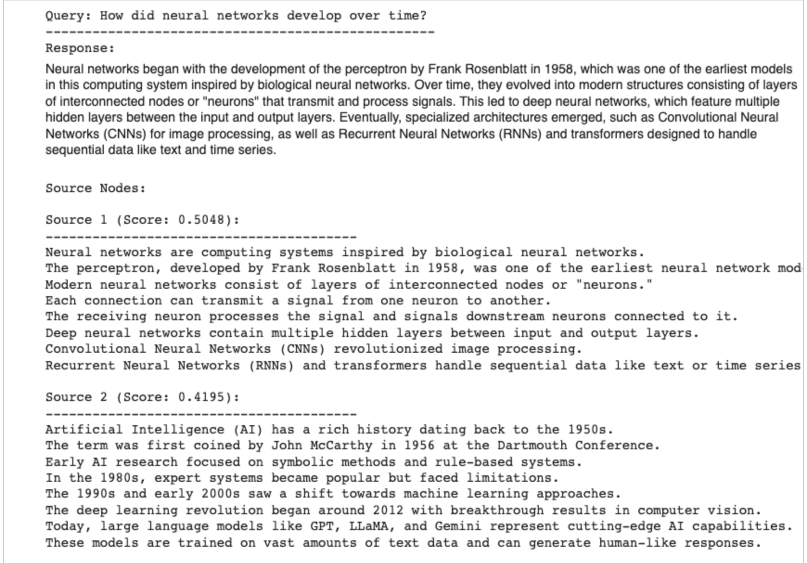
(opens the picture full size in a new tab)For the first question, the search handed Gemini neural_networks.txt (score 0.5048) and ai_history.txt (score 0.4195). For each question, the search handed Gemini the 2 files closest in meaning, best match first, and Gemini answered from them. Gemini writes a new answer every time, so yours will be worded differently.
Scroll down in your notebook for the other two questions. You're done with the practice, so you can stop after STEP 11. The Experiments cells below it are for the Challenge, under these slides.